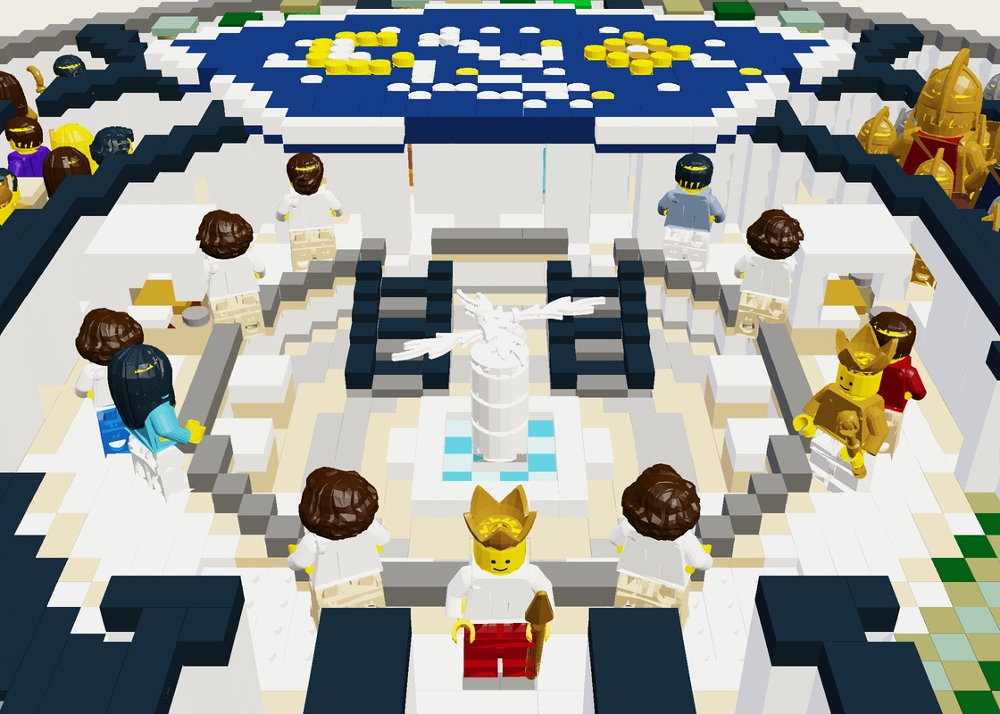
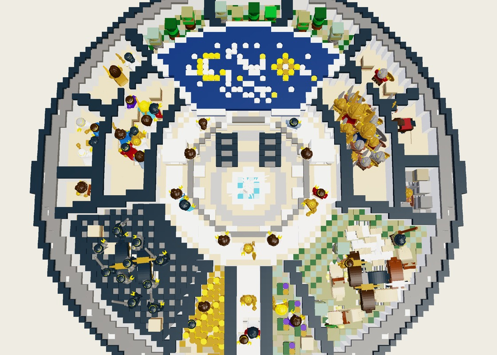

Stage III — Complete Populated Masterpiece (
set.achilles-rotunda.mpd, 8,891 pcs) — Sunken Fountain Atrium, Twin Escalators, 4 Concourse Kiosks, Celestial Starfield Roof, City at Peace, City at War, Craggy Ambush Gorge, Pastoral Meadow, Vineyard, South Processional Avenue, Golden Corn Harvest, Black Ploughed Fallow & River Oceanus.
Interior Atrium & Celestial Vault Detail — Central 4-Jet Fountain Plume, Twin Escalators, White-Canopied Kiosks & Midnight-Blue Starfield Canopy.

Zenith Architectural Plan View — Five concentric rings and ten radial chambers inside the 80×80-stud drum of Oceanus.